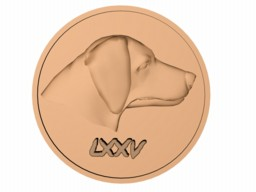

The party spends a few days wrapping up the exploration of the haunted mansion. Valek, Nibbler, Dill, Shikata and Geneva decide to go to town to collect the silver promised them by the town council, and to investigate Hughe’s potential link to the smugglers. Mandorallen decides to join them. Everyone else stays at the mansion to make preparations for a journey, take care of the few smugglers left alive and set a trap for the merchant who was helping the smugglers. In town they get money and thanks from the council. They tell the town council about the illusionary ghosts, the gnolls, and the spiders, but do not mention the smugglers. At the mention of the gnolls all the townspeople exhibit fear and relief at their dispatch, Mandorallen is told that the Justicar is due the next day. A Justicar is a Knight of Tuon who travels regions resolving disputes that town members cannot decide, and administering justice as required.
A celebratory party begins at the local bar. Many a good cheer and drink are had. Some of the party even gets marriage proposals. During the revelry, Valek and Nibbler investigate the warehouse/home of Hughe. They wait and watch for hours, as the evening goes to late night. When finally the light goes dim, Valek and Nibbler sneak into the warehouse while Hughe slept in a back room. They found crates of dried fish and of normal merchandise for a small town, but nothing terribly suspicious. Dill goes back to the mansion that evening and finds out what a hangover feels like.
The next day Mandorallen met the Justicar in the town square, and told him about the captured smugglers. The Justicar promised to return to the town in two days to check on them, after the adventurers completed their investigation. The party decided to sting the “Hugo” (possibly Hughe) of whom the captured smugglers had told when the delivery is made. Erilyn (Will) and Eowyn (Sanralet) make an appearance as Sanralet and Will at a preplanned meeting area. Hughe rolls up in his wagon. He begins to suspect something is up when questioned about the details of where the shipments are taken, and other inconsistencies. However, he seems most intent on not being killed by these two, as he believes his bodyguard Ned has been. He allows “Will” to go with him as a guard in place of Ned, the thief the party found tied up in the house. As soon as practical Eowyn switches with Erilyn to impersonate Will, as Eowyn is much better at it and can have a male body.
Hughe and Will follow the river for a four days, with the party following covertly well behind. It rains constantly the entire time. Hughe makes a "deal" with "Will" to let him go and he will disappear, rather than kill him, as he believed "Sanralet" had threatened. Hughe believed that Sanralet allowed him to live only because Sanralet doesn’t know where the rendezvous point is to drop off the weapons. On the fourth day they experience an earthquake that jolts the earth up a few feet throws the party off it's feet, breaks a wagon wheel, and breaks open a crate when it falls off the wagon. Earthquakes are completely unknown, thus making this a strange event. Hughe fixes the wagon then helps grudgingly put the weapons back in the crate appearing surprised they are there. They continue to the drop off point where Hughe waits patiently and quietly until 18 men and half-orcs come to take the weapons, drop off the payment and then leave on three barges they have steered down the river Irda. The barges are already laden, and hold 16 crates altogether. “Will” allows Hughe to leave with a promise to “disappear”.
 Through Shikatas hawk (Tomoe), the party keeps tabs on the three barges as they move down the river. The party falls behind, as the swollen creeks feeding into the Irda slow their progress. Once they catch up they find a battle scene. They find two barges grappled to the shore using finely woven steel cables and grapples. A Death’s Tale spell on one of the bodies revealed that they had been ambushed by dwarves. Scattered about the shore were pieces of 14 of the crates, 11 runners dead, 9 dwarves on a funeral pyre, and a sunken barge with two crates holding it to the bottom of the river. They believe the rest of the bodies were swept away by the fast moving current. A search of the bodies turned up two amulets embossed with the head of a dog, and a string of roman numerals. These were the symbols of the Dogs of War, the Guild of Fighters in the port city of Phaeros. Nibbler got caught by Shikata palming coins from the dead runners. Shikata then read the tracks to figure out the course of the battle, and that two dwarves had survived the battle. One of the dwarves was wounded and being helped along by the other.
Shikata tracks the two dwarves towards the woods. They follow to find a circle of stones surrounding an open trap door that guards stairs going down. Mandorallen and Geneva are reminded of a story of the Fortress of Ash, sunken on the Day of Reckoning(*). They follow the footprints down, get attacked by 3 dire rats which are fairly quickly dispatched. Mandorallen cast Disease Purification on Shikata and Valek, who had been bitten. They get to the bottom and find kobold bodies with the footprints going towards two doors on opposite sides of the room. The first door leads to a room which has collapsed, half burying another door on the far side. They decided the dwarves had not gone that way. Once they choose the other door, they find another battle scene with an empty cage, and a cowering goblin. While Eowyn shape-shifts to a pretty female goblin and discusses with Meepo what was in the cage "Fire dragon. Stolen by kobolds" and if other dwarves came through "Stolen by kobolds", the others investigate the room. Valek opens a door for the shock of his life. . . Shikata examined another door, which was partly open, saw a animal hide stretched across a copper cone.
(*) The Day of Reckoning was the shining event in the history of the Knights of Tuon. Sixty years ago, the forces of the Taar D’taal (mainly Orcs, Ogres, and other savage races) held much of the country under their control. The Knights of Tuon, guided by information from the Church of Teleron, planned an audacious offensive. Liveries were raised and trained, and allocated to each major fortress of the Taar D’Taal. Attacks were launched simultaneously on a single day, denying the enemy the ability to reinforce their strongholds. Given complete and unfailingly accurate information about the disposition of the Taar d’Taal by Teleron, the Knights were able to anticipate and counter every maneuver. The Knights won a resounding victory, freeing much of the countryside from slavery.